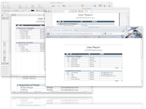

If you need any assistance, use the help option on the menu bar above, download the admin guide at http://www.jxplorer.org/documents/, or go to http://www.jxplorer.org for more options.
Upgrade to JXWorkBenchGet JXWorkBench at http://www.jxworkbench.com! If you find JXplorer useful, why not upgrade to the JXWorkBench Enterprise bundle? JXWorkBench extends JXplorer with new admin features, such as the powerful Jasper Reports open source reporting engine with a set of extensible sample reports available in web, MS office, pdf and other formats. The JXWorkBench bundle includes:
|
 |